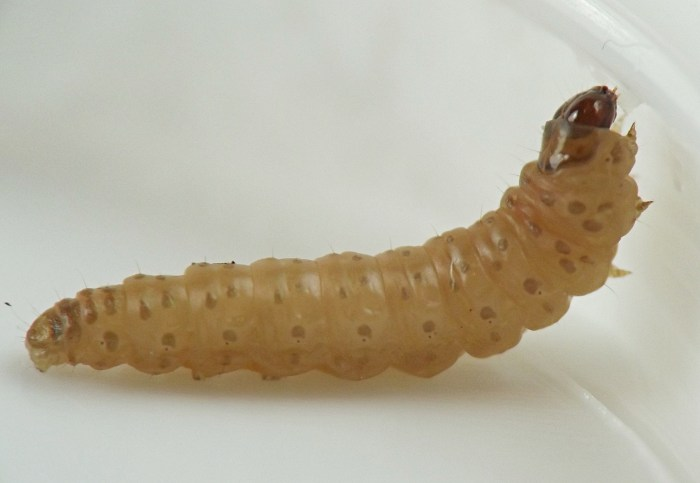
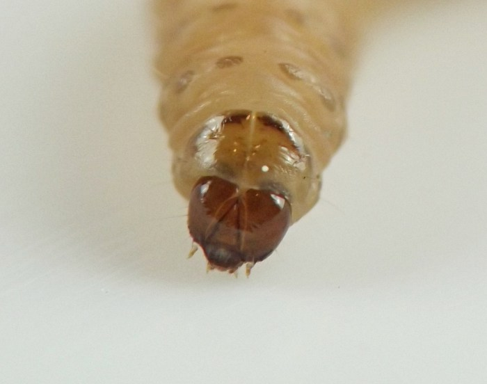
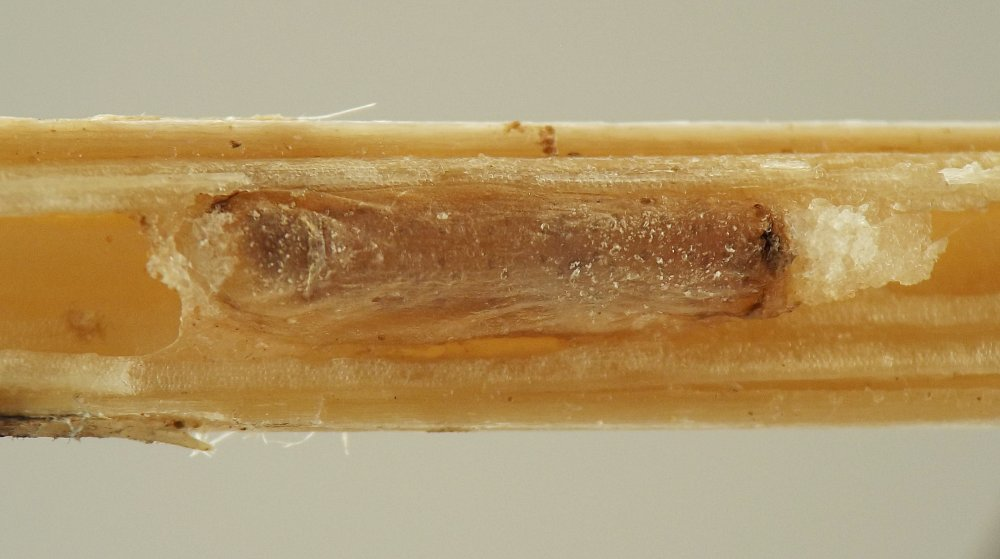
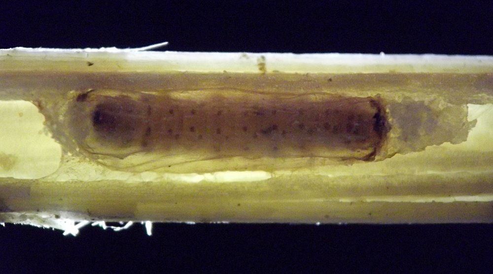
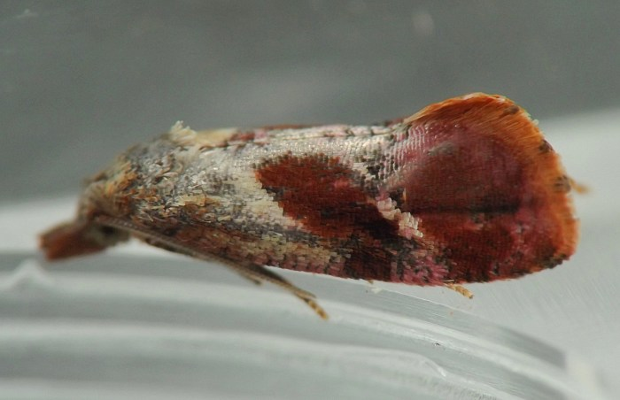
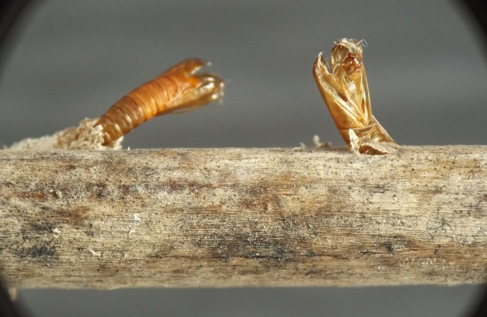
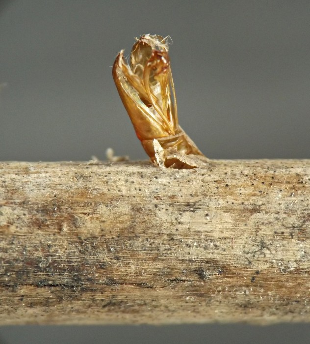

Stem borer (Lepidoptera: Tortricidae) in Chelone
| Record no.: | 0144 |
|---|---|
| Feeding guild: | Stem borer |
| Taxonomy: | Lepidoptera: Tortricidae: Cochylini: cf. Cochylichroa viscana |
| Stages observed: | trace, larva, pupa, adult |
| Distribution observed: | IA |
| Hosts in Chelone: | C. glabra (turtlehead) |
Larvae overwinter in dead stems and spin thin, cellophane-like cocoons. The pupa is thrust through the wall of the stem upon the adult's emergence in spring. The moth is a beautiful maroon color, and K. Johnson tentatively identified one I reared as Cochylini from photos (pers. comm.).
In the 20th century, M. Glenn reared Cochylichroa viscana from C. glabra in Illinois (Godfrey et al. 1987), and a quick review of images of that species on MPG (Moth Photographers Group 2026) shows a very strong resemblance to the adults I reared. Glenn's rearing of C. viscana was from "flowers and seeds" of turtlehead (ibid.), and my observations from the current study suggest a different species of Cochylichroa (as tentatively identified) on Ageratina may migrate from the flowers or fruits to the stems of that plant, or different individuals may inhabit either the reproductive parts or the stems of the plant (record 0028) - so perhaps the same is true for C. viscana on Chelone.

 Prev
Prev
{kind=link}
{kind=link}

{kind=link}

{kind=link}

{kind=link}

{kind=link}

{kind=link}

- Godfrey, G.L., Cashatt, E.D., and M. Glenn. 1987. Microlepidoptera from the Sandy Creek and Illinois River region: an annotated checklist of the suborders Dacnonypha, Monotrysia and Ditrysia (in part) (Insecta). Illinois Natural History Survey, Special Publication 7.[return to in-text citation]
- Moth Photographers Group. 2026. Cochylichroa viscana (Kearfott, 1907). Retrieved February 1, 2026 from https://mothphotographersgroup.msstate.edu/species.php?hodges=3783.[return to in-text citation]
Page created: February 1, 2026. Last update: February 27, 2026